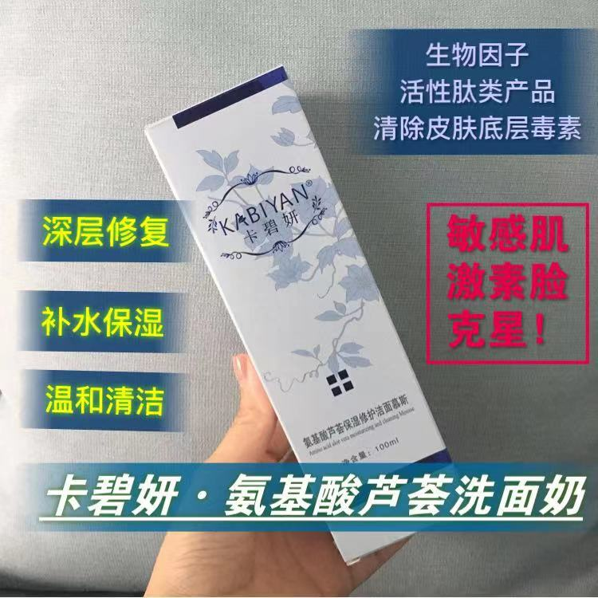

卡碧妍·氨基酸芦荟洁面奶
Cellular Cleansing Gel

性质温和，无刺激，改善水油平衡。能够彻底清除堆积在毛孔里的彩妆及大气污染残留物污垢和老化角质细胞。补充肌肤有效成分，维护肌肤本来的保湿屏障，平衡肌肤的酸碱度。镇静、舒缓受损及敏感肌肤。有效保护角膜，适合所有皮肤，包括敏感性皮肤和婴幼儿皮肤。
矢车菊、玫瑰精华、印度没药脂精华、氨基酸、脂肪酸、维生素复合物、胶原蛋白、尿囊素、维生素B、E、硫酸软骨素、甘油透明质酸、PEG-100/单硬酸甘油酯、C12-16烷基糖苷。
先用温水洗脸，轻轻挤出部分产品在刷头,待与手揉起泡沫后，顺皮肤纹理由内向外在脸部打圈3-5分钟后,然后用温水清洗干净。早晚使用，会使您的肌肤更柔嫩亮滑。